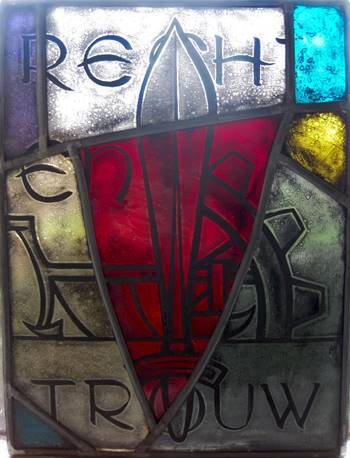
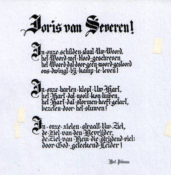
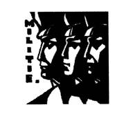

> nieuwsbrief >
Driemaandelijks
tijdschrift
van het Studiecentrum
Joris van Severen v.z.w.
Inhoud

Kaftillustratie:
glasraam met de Verdinaso-symbolen
ploeg, rad en zwaard en het DMO-motto ’Recht en Trouw’, (thans
in het museum ’Wakken Herdenkt’).
Cyriel Verschaeve-colloquium
te
Alveringem zaterdag 9 november 2019. Dit colloquium zal gewijd
zijn aan de naoorlogse beeldvorming over Cyriel Verschaeve met
o.m. aandacht voor de bedevaarten naar Solbad Hall van o.a.
het toenmalige Blauwvoetjeugdverbond, opvolger van het
Algemeen Diets Jeugdverbond.
Erratum Jaarboek 23 (2019)
In de
bijdrage Edmond Willem
Oproep omtrent Berten Leuridan (1915-1938)
“Om een korte
biografie over Robert ‘Berten’ Leuridan (1915-1938) te
schrijven, ben ik nog op zoek naar nadere gegevens over hem. Hij
was afkomstig uit het West-Vlaamse Alveringem waar hij ook
begraven ligt in de buurt van de graftombe van Cyriel
Verschaeve; hij overleed als student in Leuven op 23 april 1938.
Ik ben nog op
zoek naar volgende gegevens. Ik bezit zijn bidprentje maar weet
niet of hij nog broers of zussen had. Is er nog familie van hem
in leven? Waar deed hij zijn humaniora? Wat studeerde hij in
Leuven? In welke omstandigheden overleed hij? Aan een ziekte of
een ongeval? Ook zoek ik nog een paar foto’s van hem. Tot nu toe
heb ik deze nog niet gevonden.
Berten
Leuridan was actief binnen de Dinaso-studenten. In het
eigenlijke Joris van Severen-archief, bewaard in het
universiteitsarchief van Leuven, worden geen gegevens van hem
bewaard. Kortom voor iedere hulp en informatie ben ik dankbaar.
pieterjan.verstraete@skynet.be

Joris van Severen geen optie voor nazi-Duitsland
Voor
mij ligt het 23ste jaarboek van het Studiecentrum Joris van
Severen. Al meer dan twee decennia slaagt een groep van
vrijwilligers – amateur- en echte historici – erin over en rond
de figuur van Joris van Severen en zijn Verdinaso een bundel
boeiende bijdragen te publiceren. Zo ook dit jaar. Elk jaar wijd
ik hier een recensie aan op Doorbraak, en focus ik op één stuk.
Dat kan het meest merkwaardige zijn, of het meest
‘vernieuwende’. Recent aangeraakte bronnen werpen vaak een nieuw
licht op een of ander aspect van het bestudeerde onderwerp. En
in afwachting van de ‘definitieve’ (voor zover überhaupt
mogelijk) biografie van Van Severen, biedt elk jaarboek wel iets
‘extra’s’.
Op zoek naar vrienden
In
dit 23ste deel valt de bijdrage van bezieler
Overal
in Europa steunden de nazi’s fascistoïde bewegingen, met raad,
daad of cent.
Geen
vertrouwen
Tussen
1932 – het jaar van de oprichting van het Verdinaso – en mei
1940 – de moord op Van Severen, vond Cailliau tien documenten
terug ‘waarin vanuit Duitse optiek over het Verdinaso en zijn
leider gereflecteerd werd’. Een elfde in dit jaarboek behandelde
stuk dat dateert uit augustus 1940. Foto’s van de documenten en
bijzonder uitgebreide citaten in originele tekst, staven het
onderzoek van Cailliau. De
Duitse instanties waren bijzonder goed geïnformeerd over de
binnenlandse politiek in België, de Vlaamse beweging,
en de verhoudingen tussen Verdinaso en VNV. In het begin van de
jaren ‘30 koesterde nazi-Duitsland nog hoop om het Verdinaso en
Van Severen als aanspreekpunt te kunnen aanwenden. Die hoop
slonk als sneeuw voor de zon, en zeker na de Nieuwe
Marsrichting. Hun politieke en maatschappelijke standpunten
spoorden niet meer met de ideologie en plannen van
nazi-Duitsland.
Fascisme
Al
in een document van 9 juli 1934, gericht aan Reichskommisar NSDAP Haake,
stelt de auteur vast dat het Verdinaso ‘Duitsvi
Ook
Franse en Belgische militaire kringen lijken erg opgezet door
die Nieuwe Marsrichting, heet het in een synthesenota van 1935
over het ontstaan en de evolutie van de Vlaamse beweging. De
auteur stelt ook vast dat het Verdinaso zijn streng völkische Groot-Nederlandse
doel inruilde voor fascisme. Een V-man bericht in 1935 dat Van
Severen zich liever verbindt met Frankrijk dan zich te laten
‘verpruisen’.
Van
Severen liep echt niet op met het nationaalsocialistische
Duitsland, zo blijkt uit de verslagen en documenten.
Verder
Verder
biedt dit jaarboek weinig revelerende of verrassende stukken. In
een tweede deel besluit de onvermoeibare
_________________
N.a.v.: Jaarboek Joris van
Severen 23, uitgegeven door het Studiecentrum
Joris van Severen, Paddevijverstraat 2, 8900 Ieper. ISBN: 9789076057224?
208 pp., gen. Ill. Prijs:
€ 29 (leden), (niet-leden: € 35.00
Bron: www.doorbraak.be 29 jUNI 2019,
05:43
Nog
voorradige Jaarboeken Joris van Severen
|
Jaargang |
Auteur |
Leden- prijs |
Niet-leden |
|
jaarboek 3 - 1999 272 pagina’s |
De ideologische
evolutie van Joris van Severen |
20 € |
25 € |
|
jaarboek 5 - 2001 |
208 p |
10 € |
15 € |
|
jaarboek 6 - 2002 |
208 p |
10 € |
15 € |
|
jaarboek 7 - 2003 |
208 p |
10 € |
15€ |
|
jaarboek 8 - 2004 |
208 p |
10 € |
15 € |
|
jaarboek 9 – 2005
Oorlogsdagboek 536 pagina’s |
Joris van Severen, Die vervloekte Oorlog |
uitgeput |
uitgeput |
|
jaarboek 13 – 2009 |
208 p |
15 € |
20 € |
|
jaarboek 14 - 2010 |
208 p |
15 € |
20 € |
|
jaarboek 15 - 2011 |
208 p |
15 € |
20 € |
|
Jaarboek 16 - 2012 |
208 p |
20 € |
25 € |
|
Jaarboek 17 - 2013 |
208 p |
20 € |
25 € |
|
Jaarboek 18 – 2014
Album Grote Fotobiografie |
M. Cailliau & P.J. Verstraete |
55 € |
65 € |
|
Jaarboek 19 - 2015 |
208 p |
29 € |
35 € |
|
Jaarboek 20 – 2016 |
208 p |
29 € |
35 € |
|
Jaarboek 21 – 2017 |
208 p |
29 € |
35 € |
|
Jaarboek 22 – 2018 |
208 p |
29 € |
35 € |
|
Jaarboek 23 – 2019 |
208 p. |
29 € |
35 € |
|
|
|
|
|

In de
eerste jaargangen van deze ‘Nieuwsbrief’ hebben we menige
aflevering gebracht van de memoires van Fons van Opstal
omtrent zijn Dinaso-militie-verleden. Die epische verhalen
zijn ondertussen ook al doorgedrongen in de literatuur.
Getuige daarvan de vuistdikke roman ‘Ten wuesten van Wezel –
De Eeuw van mijn Moeder’ van Hendrikus Hardewyker.1 In wat
volgt brengen we een uitgebreide fragmenten uit deze roman
waarvan de verhaallijnen de gehele geschiedenis van de 20e
eeuw op een meesterlijke wijze en met een Heel-Nederlandse
insteek overspannen.
Insiders
zullen in de Staf uit het verhaal moeiteloos de
Dinaso-militant Staf van de Aa herkennen – aan wie de auteur
z’n relaas te danken had.
De Dinaso Militanten Orde in de literatuur (1)
“(…) Zo
gebeurde het dat Markus die middag uit de Oranjestraat de
Italiëlei kwam opgereden… Nu was het even uitkijken voor de
versmalling van de stadsboulevard aan de
Enkele wagens
voor hem vertraagden en kwamen tot stilstand. Er was op de
Teniersplaats iets gaande, maar wat precies kon Markus niet
waarnemen. Hij draaide zijn raampje open en stak zijn hoofd naar
buiten om de aard van de hindernis te achterhalen, maar hij kon
niets zien omdat een grote vrachtwagen een eindje verder op een
ongewoon schuine wijze op de straat stond en het zicht op het
kruispunt benam.
Maar horen
deed Markus des te meer. Er heerste in de omgeving een
ongelooflijk tumult. Er moest veel volk op de been zijn, hij
hoorde luide kreten en woest geschreeuw van staccato stemmen, af
en toe schelle kreten als van pijn alsook langgerekte
jammerklachten. Er waren harde knallen van tegen elkaar botsende
metalen lichamen - toch geen autobotsingen? - en plotseling een
hevig gekraak van hout, alsof een zware truck een planken
steiger in diggelen zou rijden. Er werd snerpend op een fluitje
geblazen, vast een politiefluitje, er werden bulderende bevelen
geschreeuwd.
En er werd
door dit alles heen overvloedig getierd, gevloekt en gescholden.
Wat was er in vredesnaam aan de hand? De rij auto’s voor hem
bewoog niet en het werd Markus te machtig. Hij stapte uit zijn
wagentje, keek achteruit en om zich heen, en deed een paar
stappen opzij zodat hij langs de schuine vrachtwagen heen kon
kijken. Net op dat ogenblik kwamen er wel twintig mannen
aangelopen in zijn richting, weg van de Teniersplaats.
Plotseling
veranderde het strijdtoneel radicaal. Er klonk een snijdend
gefluit, een nieuwe aanvaller diende zich aan en baande zich een
weg tussen de socialisten en de nationalisten, die slag leverden
op leven en dood. Van achter de fontein kwam de Antwerpse
politie aangestormd en chargeerde, de meesten duchtig om zich
heen maaiend met de matrak; een zestal met de blanke sabel, die
ze met de platte kant genadeloos op de hoofden van de vechtenden
lieten neerkomen.
De politie
dreef het hele kluwen vechtende kemphanen achteruit, terug naar
de Teniersplaats. Een paar tellen was het onnatuurlijk stil
naast de wachtende auto’s, waarin chauffeurs en passagiers zich
geborgen hadden, maar nu werd de nieuwsgierigheid veel
toeschouwers te groot en sommigen stapten uit om te gaan kijken
hoe de rellen zouden aflopen. Markus aarzelde even, maar bezweek
toen ook voor de verleiding en volgde behoedzaam naar het
kruispunt. Daar was de rust echter allesbehalve teruggekeerd,
integendeel. Terwijl de politie nog steeds de handen vol had met
de knokploegen van de dokwerkers en de Vlaams-nationalisten,
stond de geüniformeerde vnv-stoottroep
als een falanx rond een enorm houten uithangbord, dat ze tot in
het midden van het kruispunt meegesleept hadden.
ROOIE RATTEN ROLT UW MATTEN!
De bende werd
van drie kanten aangevallen door groepjes woedende
havenarbeiders en de falanx bleek bij nader toezien toch niet
helemaal ongenaakbaar, want de zwarthemden4 zaten
duidelijk in de verdediging. Markus wist niet waar eerst te
kijken en zo vond hij toch de verklaring voor het
onheilspellende gekraak van hout dat hij kort daarvoor al van op
afstand had gehoord. Er lag op de stoep, voor de fontein, een
aanzienlijke stapel gekraakte kepertjes en latten, die
ongetwijfeld het overschot vormden van een tweede uithangbord,
waarop het vnv een
andere leuke slagzin had gekladderd. Allicht hadden de
dokwerkers daar al korte metten mee gemaakt. Een groepje van hen
probeerde hun vermoedelijke overwinning nu alvast kracht bij te
zetten door de houtstapel in brand te steken, maar dat leek
voorlopig niet te lukken.
Markus en met
hem een aantal andere medeburgers stonden alleen of in kleine
groepjes ongelovig, geschokt en zelfs met ontzetting, maar
uiteraard machteloos naar het spektakel te kijken. De absurde
mengeling van afkeer en fascinatie die een ongebreideld gevecht
bij niet-betrokken toeschouwers altijd oproept, hield hen
minutenlang in de ban. Tot plotseling achter hen een bulderend
zware stem als vragend riep: ‘Dinaso?’.
Markus en de
andere omstaanders keken verrast om en zagen daar een kleine man
in donkergroen uniform, met hoge laarzen aan en een zware kepi
op het hoofd, in zijn rechterhand een wapenstok schuin
voorwaarts gestrekt. Een seconde later klonk uit een paar
honderd kelen het daverend antwoord: ‘Hier!’ De Dinaso-militie
was op de Teniersplaats gearriveerd. De kleine man hief zijn
wapenstok hoog en riep luidkeels: ‘Voorwaarts!’ De manschappen
grepen hun wapenstok, duwden hun kepi stevig op hun hoofd en
trokken de stormband onder hun kin.
Toen kwam de
kleine commandant in actie. Hij liep met getrokken wapenstok de
hele linie langs, gaf als een echte antieke legeraanvoerder
aanwijzingen en riep de manschappen bij hun naam. Tenslotte
begon de vermoeienis een rol te spelen. De Dinaso-militie
bestond bijna uitsluitend uit jonge twintigers die regelmatig
getraind waren ook op uithoudingsvermogen; bovendien vochten zij
uit overtuiging, zij vielen aan in de strikte betekenis. De
politiemensen waren niet allemaal twintigers, sommigen liepen al
naar de veertig.
Ook al hadden
ze geen kantoorbaantje, ze trainden al niet meer met zoveel
overtuiging en sommigen stelden met zorg vast dat ze al een
buikje kweekten. Ze vochten beroepshalve en routinematig; ze
vielen niet aan, ze verdedigden de openbare orde. Uiteindelijk
boog de politielinie door. De agenten namen de benen over de De
Keijserlei, nog enkele meters nagezeten door de triomferende
Dinaso’s. (…)”
_____________________
Noten
1
Hendrikus
Hardewyker,
‘Ten wuesten van Wezel –
De Eeuw van mijn Moeder’, gen., 967 pp., citaat
pp.274-280. - Lecturium Uitgeverij, Zoetermeer, 2017. Joris van
Severen en/of het Verdinaso treden in dit werk vaker op. O.m. op
de pagina’s 136-138-267 e.v.-309-404 e.v.- en 496.
2
‘(…) De gewelddadige reputatie van de Liga
bleef nog lang nagalmen, ook in de geschiedschrijving. Een goed
voorbeeld is een confrontatie in oktober
3
Hunin Jan,
4 Historisch niet correct: in de jaren
van het interbellum droegen de vnv-militanten geen
‘zwarte’ hemden, wel ‘grijze’, als leden van de ‘Grijze- of
Werf- Brigade’
(Wordt
vervolgd)
Op I0 mei
l940 werd Joris van Severen, de 45-jarige leider van het
Verdinaso, aangehouden door de Belgische Staatsveiligheid en
naar Frankrijk gevoerd. Tien dagen later werd hij in Abbeville
door zijn Franse bewakers neergeschoten. Nog elk jaar trekken
zijn bewonderaars naar zijn graf in Abbeville. In l996 werd een
Studie- en Coördinatiecentrum Joris van Severen opgericht, dat
intussen vier jaarboeken publiceerde en twee colloquia hield.
Waarom kan
een figuur als Joris van Severen, zestig jaar na zijn dood, nog
steeds fascineren? Een verklaring dient niet zozeer gezocht te
worden in het politieke discours van de man, dan wel in diens
charismatische persoonlijkheid. ‘Histories’ brengt het portret
van deze Vlaamse intellectueel, een estheet, “verdwaald in de
politiek”.
Joris van
Severen werd op l9 juli l 894 geboren als oudste zoon van een
plattelandsnotaris in Wakken, op de grens van West- en
Oost-Vlaanderen. Hij groeide op in een beschermd milieu. Zoals
toen ook nog in Vlaamsvoelende burgerlijke kringen gebruikelijk
was, werd hij tweetalig opgevoed. Na zijn humaniora in
Sint-Barbara. het jezuïetencollege van Gent, trok hij naar de
Gentse universiteit om rechten te studeren.
Bij het
uitbreken van de Eerste Wereldoorlog, begin augustus l9l4,
meldde Van Severen zich niet als vrijwilliger, omdat hij de
anarchistische ideeën aanhing van August Vermeylen, die niet in
een vaderland geloofde. Hij vertrok pas toen hij midden
september opgeroepen werd. In het leger werd hij onmiddellijk
geconfronteerd met het "arme Vlaanderen".
Vooral de
Franse katholieke auteurs van die tijd, in de eerste plaats Léon
Bloy, spraken hem sterk aan. Ondanks zijn afkeer voor het
antimilitarisme klom hij door zijn voorbeeldig militair gedrag
op tot onderluitenant. Via zijn vooroorlogse contacten raakte
hij betrokken bij de Frontbeweging, een clandestiene organisatie
die het Vlaamse bewustzijn van de soldaten probeerde te
versterken en opkwam voor hun rechten. In die beweging speelde
hij echter geen belangrijke rol. Wel kreeg hij als flamingant
problemen met zijn chefs.
Na de oorlog
slaagde Van Severen er niet in zijn studies in de rechten af te
maken. Begin l92l richtte hij, samen met Achilles Mussche, een
oud-activist met socialistische sympathieën, een nieuw
tijdschrift op. In de geest van het humanitaire expressionisme
wilden ze in Ter Waarheid
"het gedachteleven in Vlaanderen en in de wereld" volgen op
godsdienstig, cultureel en politiek vlak.
Eind l92l
werd Joris van Severen in het arrondissement Roeselare-Tielt
verkozen tot volksvertegenwoordiger van het Vlaamsche Front, de
partij die uit de Frontbeweging gegroeid was. Onder invloed van
zijn favoriete Franse auteurs vroeg hij steeds nadrukkelijker
dat het Vlaams-nationalisme een uitgesproken katholiek karakter
zou krijgen. Bovendien pleitte hij steeds meer voor de vestiging
van een autoritaire orde in het oude Europa dat door oorlog en
revolutie verscheurd werd. Deze nieuwe ordening keerde zich
tegen de liberale democratie en steunde op het "solidarisme“,
met de familie, de beroepsgemeenschap (de corporatie) en de
volksgemeenschap als fundamenten. De realisatie ervan zag Van
Severen in de fusie van Vlaanderen en Nederland tot een
Groot-Nederlandse staat. De vorming van een militie leek hem een
belangrijk middel om zijn droom te realiseren. Deze standpunten
schiepen grote verdeeldheid in Vlaams-nationale rangen.
Eind mei l929
werd Joris van Severen niet herkozen als volksvertegenwoordiger.
Hij ging nu nog meer zijn eigen weg en raakte steeds meer
geïsoleerd. In oktober l93l reageerde hij met de oprichting van
het Verdinaso.
Wellicht
omdat Van Severen tot het inzicht kwam dat zijn beweging de
confrontatie met de Belgische staat niet aankon - zijn Dietsche
Mlilitie werd al na een paar jaar verboden - sloeg hij in l934
een “Nieuwe Marsrichting" in: hij wilde de Belgische staat niet
meer vernietigen maar veroveren. Voortaan droomde hij van het
herstel van de XVII Provinciën uit de tijd van de Bourgondische
Nederlanden. De beweging kreeg ook een Waalse vleugel.
Met zijn
afwijzing van elke vorm van federalisme belandde Van Severen
helemaal in het Belgicistische kamp. Voor koning Leopold III,
diens neutraliteitspolitiek en autoritaire ideeën, kreeg hij
grote bewondering. Veel aanhangers hadden moeite om hun leider
te blijven volgen.
Na de Duitse
inval in Polen riep Van Severen zijn militanten op in het leger
te dienen en er het voorbeeld te geven. Maar de liberale pers en
de Staatsveiligheid bleven hem van pro-Duitse sympathieën
verdenken. Zo belandde hij op de lijst der staatsgevaarlijke
verdachten. Op l0 mei werd hij aangehouden en aan de Franse
overheid overgeleverd.
Joris van
Severen was ongetwijfeld een charismatisch figuur. Daarvan
getuigen de vele portretten die diverse kunstenaars van hem
gemaakt hebben en die bijna allemaal dezelfde karaktertrekken
suggereren: een beschaafd man met een verzorgd uiterlijk, een
idealist, ernstig en sober, die vastberaden in de toekomst
kijkt. Dit beeld wordt nog steeds gekoesterd door een beperkte
kring aanhangers (van wie de meesten hem niet of nauwelijks
gekend hebben). Voor hen is Van Severen een rusteloze zoeker die
steeds de moed had zijn nieuwe inzichten te propageren. Zijn
pleidooi voor het herstel van de XVII Provinciën zien ze als een
vroege vertolking van de Benelux-gedachte. Maar buiten deze
kring is de bewondering voor Joris van Severen minder groot. De
meeste historici relativeren sterk het belang van het Verdinaso
en wijzen vooral op de fascistische kenmerken van deze beweging.
__________________
N.a.v.
Joris van Severen, in de 3-delige reeks over Belgische
collaborateurs: ‘Histories’, Canvas, 30 november.
Edgard Delvo
In het
tijdsbestek waarover Edgard Delvo (1905-1999) het hieronder
heeft was hij secretaris-generaal van de Centrale voor
Arbeidersopvoeding van de Belgische Werklieden Partijen en
naaste medewerker van Hendrik de Man en fel ijveraar voor
diens ‘Plan De Man’.
“(…) Maar het
groepje dat me het meestbelovend scheen was niet in
Belgischgezinde kringen te zoeken, wèl onder Vlaamse jongeren.
De aanleiding van de toenadering van verschillende onder hen is
eigenlijk wel mijn Democratisch
Socialisme geweest, dat me voor het eerst met de
Vlaams-nationalisten in verbinding bracht. De standpunten die ik
in dat werkje verdedigde had ik al zo menigmaal in spreekbeurten
in eigen kringen uiteengezet. Dat heeft zeker wel enige invloed
gehad, maar kon geen weerklank naar buiten vinden. En zie: na de
publicatie van mijn geschrift over democratisch socialisme...
dat als de verdediging van een hervormde democratie was bedoeld,
werden contacten gelegd met mensen uit andere groepen, die hun
instemming met sommige van mijn standpunten betuigden, ofschoon
zij tot ons vi
Hendrik de
Man, die me zelf had aangeraden mijn in zijn maandblad
verschenen artikels in boekvorm uit te geven, betuigde weliswaar
niet zijn volle instemming de inhoud ervan, maar sprak er zich
met waardering over uit.
Wat me
verraste, was de reactie van mensen uit bewegingen die de BSP
allesbehalve genegen waren. Er moet inderdaad in dat werkje een
grondtoon geweest zijn die hun de oren deed spitsen. Joris van
Severen stuurde een medewerkster om met mij in contact te komen
en in een daaropvolgend persoonlijk gesprek vestigde hij er mijn
aandacht op dat de socialistische partij, in haar geheel gezien,
verder verwijderd was van wat ik daar had neergeschreven dan
zijn eigen beweging: tussen zijn solidarisme en mijn socialisme
zag hij geen wezenlijk verschil, en als de democratie ooit zo
kon worden zoals ik ze daar utopisch voorstond, zou hij er zeker
geen bezwaar tegen hebben.
Kortom, zijn
mening was dat ik in het Verdinaso thuishoorde en niet in de
BSP. Ik kon hem niet helemaal ongelijk geven. Maar ik vestigde
er toch zijn aandacht op dat ik bij hem één lid méér zou zijn,
wat niet veel te betekenen zou hebben, terwijl ik door mijn
leidende functie in de socialistische beweging heel wat meer kon
bereiken om mijn opvattingen te doen doordringen. Dat zag hij
wel in. Ik heb toen ook begrepen waarom Van Severen allesbehalve
afwijzend stond tegenover [Hendrik] de Man - en De Man evenmin
tegenover hem. Wanneer ik aan Van Severens deportatie en dood
denk en meteen aan zijn goede betrekkingen met invloedrijke
personen uit de omgeving van de Koning, dan kan ik niet
begrijpen hoe hij in de spooktrein is terechtgekomen; ondanks
het autoritaire karakter van zijn beweging, meen ik, moet zijn
arrestatie op een vergissing hebben berust, evenals zijn
jammerlijk einde.
Mijn contact
met Van Severen en zijn beweging was dus erg kortstondig
geweest, maar die hele jaren door heeft het Verdinaso zich
veeleer sympathiek dan afwijzend tegenover mij geuit, en ik moet
zeggen: vandaag de dag zijn het vaak weer oud-dinaso’s en
solidaristen die zich, evenals jongerengroepen, voor mijn
opvattingen interesseren, mij uitnodigen spreekbeurten te houden
voor hun afdelingen en de verwantschap tussen mijn sociale
stellingen en hun solidaristische standpunten beklemtonen.(…)”
______________________
Edgard Delvo, De
mens wikt…. Terugblik op een wisselvalig leven,
De Nederlandsche Boekhandel, 1978, pp. 104-105.
Luk van Biervliet (Brugge 5
april 1937 – Kortenberg 8 augustus 2019). Luk was vanaf de
aanvang lid van het Studiecentrum Joris van Severen. Ieder jaar
behoorde hij ook tot de getrouwen die in de meimaand aanwezig
waren te Abbeville voor de groet aan het dubbelgraf van Joris
van Severen en Jan Ryckoort.
Tom
Allewaert (Roeselare
10 november 1949 – Brugge 27 augustus 2019). Aan zijn Cruyce van Bourgonje
werd jaren geleden al de gedenkplaat voor de vier Brugse
slachtoffers van het bloedbad van Abbeville aangebracht en wordt
sindsdien de jaarlijkse herdenking gehouden voorafgaand aan het
gezamenlijk bezoek aan het dubbelgraf te Abbeville.
In deze
rubriek verwijzen we zonder veel commentaar naar recente
publicaties waarin Joris van Severen en/of het Verdinaso
vermeld worden. We citeren de meest treffende passussen
woordelijk zonder daarin volledigheid na te streven. We
verzoeken onze lezers, met ons, uit te zien naar publicaties
die voor deze rubriek 'stof' kunnen leveren en ons kopie van
de betreffende passages toe te sturen.
Pro Memorie
In het jongste nummer
(nr.21 (2019) afl.1) van Pro
Memorie, bijdragen tot de rechtgeschiedenis der Nederlanden,
staat een artikel van Linde Declercq over Louis Wodon,
kabinetschef van Albert I en Leopold III. Wodon wordt daarin
geciteerd met een pleidooi om een wet uit te vaardigen “contre
les bandes de dinasos et autres factieux” (nota van 28 september
1933). Naast het Verdinaso wordt ook de Anti-Oorlogsliga als een
potentieel doelwit van dergelijke wetgeving vermeld.